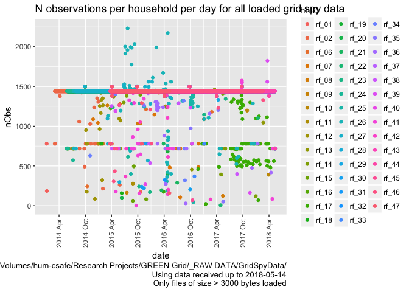

Processing, cleaning and saving NZ GREEN Grid project 1 minute electricity consumption data
Ben Anderson (b.anderson@soton.ac.uk, @dataknut)
Last run at: 2018-05-01 17:45:10
1 Citation
If you wish to use any of the material from this report please cite as:
- Anderson, B. (2018) Processing, cleaning and saving NZ GREEN Grid project 1 minute electricity consumption data, University of Otago: Dunedin, NZ.
2 Introduction
Report circulation:
- Restricted to: NZ GREEn Grid project partners and contractors.
2.1 Purpose
This report is intended to:
- load and clean the project electricity consumption data (Grid Spy)
- save the cleaned data out as a single file per household
- produce summary data quality statistics
2.2 Requirements:
- grid spy 1 minute data downloads
2.3 History
Generally tracked via our git.soton repo.
2.4 Support
This work was supported by:
- The University of Otago
- The New Zealand Ministry of Business, Innovation and Employment (MBIE)
- SPATIALEC - a Marie Skłodowska-Curie Global Fellowship based at the University of Otago’s Centre for Sustainability (2017-2019) & the University of Southampton’s Sustainable Energy Research Group (2019-202).
This work uis (c) 2018 the University of Southampton.
3 Obtain listing of files
In this section we generate a listing of all 1 minute data files that we have received. If we are running over the complete dataset then we will be using data from:
- /hum-csafe/Research Projects/GREEN Grid/_RAW DATA/GridSpyData/
In this run we are using data from:
- ~/Data/NZGreenGrid/gridspy/1min_orig/
If these do not match then this may be a test run.
print(paste0("Looking for 1 minute data using pattern = ", pattern1Min, " in ", fpath))## [1] "Looking for 1 minute data using pattern = *at1.csv$ in ~/Data/NZGreenGrid/gridspy/1min_orig/"fListCompleteDT <- as.data.table(list.files(path = fpath, pattern = pattern1Min, # use the default pattern to filter e.g. 1m from 30s files
recursive = TRUE))
if(nrow(fListCompleteDT) == 0){
stop(paste0("No matching data files found, please check your path (", fpath, ") or your search pattern (", pattern1Min, ")"))
} else {
print(paste0("Processing file list and getting file meta-data (please be patient)"))
fListCompleteDT <- fListCompleteDT[, c("hhID","fileName") := tstrsplit(V1, "/")]
fListCompleteDT <- fListCompleteDT[, fullPath := paste0(fpath, hhID,"/",fileName)]
for(f in fListCompleteDT[,fullPath]){
rf <- path.expand(f) # just in case of ~ etc
fsize <- file.size(rf)
fmtime <- ymd_hms(file.mtime(rf), tz = "Pacific/Auckland") # requires lubridate
fListCompleteDT <- fListCompleteDT[fullPath == f, fSize := fsize]
fListCompleteDT <- fListCompleteDT[fullPath == f, fMTime := fmtime]
fListCompleteDT <- fListCompleteDT[fullPath == f, fMDate := as.Date(fmtime)]
}
ofile <- paste0(outPath, indexFile)
print(paste0("Saving 1 minute data files metadata to ", ofile))
write.csv(fListCompleteDT, ofile)
print("Done")
}## [1] "Processing file list and getting file meta-data (please be patient)"
## [1] "Saving 1 minute data files metadata to ~/Data/NZGreenGrid/gridspy/consolidated/fListCompleteDT.csv"
## [1] "Done"Overall we have 1913 files from 4 households. The following chart shows the distribution of these files over time using their sizes. Note that white indicates the presence of small files which may not contain observations.
myCaption <- paste0("Data source: ", fpath,
"\nUsing data received up to ", Sys.Date())
plotDT <- fListCompleteDT[, .(nFiles = .N,
meanfSize = mean(fSize)),
keyby = .(hhID, date = as.Date(fMDate))]
#>> All files plots ----
ggplot(plotDT, aes( x = date, y = hhID, fill = log(meanfSize))) +
geom_tile() +
scale_fill_gradient(low = "white", high = "black") +
scale_x_date(date_labels = "%Y %b", date_breaks = "1 month") +
theme(axis.text.x = element_text(angle = 90, vjust = 0.5, hjust = 0.5)) +
labs(title = "Mean file size of all grid spy data files received per day",
caption = paste0(myCaption,
"\nLog file size used as some files are full year data")
)
ggsave(paste0(outPath, "gridSpyAllFileListSizeTilePlot.png"))## Saving 7 x 5 in image4 Load data files
In this section we load the data files that have a file size > 3000 bytes. Things to note:
- We assume that any files smaller than this value have no observations. This is based on:
- Manual inspection of several small files
- The identical (small) file sizes involved
- But we should probably test the first few lines to double check…
- We have to deal with at least 2 different date formats and quite a lot of duplication some of which causes the differnt date formats. The code to fix these is included below but see also our repo issues list.
# > Load, process & save the ones which probably have data ----
hhIDs <- unique(fListCompleteDT$hhID) # list of household ids
hhStatDT <- data.table() # stats collector
for(hh in hhIDs){
print(paste0("Loading: ", hh))
tempHhDT <- data.table() # create data.table to hold file contents
fListCompleteDT <- fListCompleteDT[, fileLoaded := "No"]
filesToLoad <- fListCompleteDT[hhID == hh & fSize > dataThreshold, fullPath] # select the files that meet our size threshold
for(f in filesToLoad){
#print(paste0("File size (", f, ") = ", fListCompleteDT[fullPath == f, fSize], " so probably OK")) # files under 3kb are probably empty
# attempt to load the file
tempDT <- fread(f)
#print("File loaded")
# set some file stats
fListCompleteDT <- fListCompleteDT[fullPath == f, fileLoaded := "Yes"]
fListCompleteDT <- fListCompleteDT[fullPath == f, nObs := nrow(tempDT)] # could include duplicates
if(nrow(select(tempDT, contains("NZ"))) > 0){ # requires dplyr
# => there is at least 1 column whose name contains NZ so we have NZ time
#print("NZ time")
setnames(tempDT, 'date NZ', "date_NZ")
# Check the date format as it could be y-m-d or d/m/y :-(
tempDT <- tempDT[, testDate := ifelse(substr(date_NZ,2,2) == "/" | # day is 1 digit
substr(date_NZ,3,3) == "/" , # day is 2 digits
"dmy", "ymd")] # if there is a "/" then it is d/m/y
# Now use that to correctly parse dates
tempDT <- tempDT[testDate == "ymd", r_dateTime := ymd_hm(date_NZ, tz = "Pacific/Auckland")] # requires lubridate
tempDT <- tempDT[testDate == "dmy", r_dateTime := dmy_hm(date_NZ, tz = "Pacific/Auckland")]
} else {
# we have UTC
#print("UTC")
setnames(tempDT, 'date UTC', "date_UTC")
tempDT <- tempDT[, testDate := ifelse(substr(date_UTC,2,2) == "/" | # day is 1 digit
substr(date_UTC,3,3) == "/", # 2 digits
"dmy", "ymd")]
tempDT <- tempDT[testDate == "ymd", r_dateTime := ymd_hm(date_UTC, tz = "UTC")] # requires lubridate
tempDT <- tempDT[testDate == "dmy", r_dateTime := dmy_hm(date_UTC, tz = "UTC")]
}
#print(head(tempDT)) # test
fListCompleteDT <- fListCompleteDT[fullPath == f, obsStartDate := min(as.Date(tempDT$r_dateTime))]
fListCompleteDT <- fListCompleteDT[fullPath == f, obsEndDate := max(as.Date(tempDT$r_dateTime))]
tempHhDT <- rbind(tempHhDT, tempDT, fill = TRUE) # just in case there are different numbers of columns (quite likely!)
}
# > Remove duplicates caused by over-lapping files and dates etc ----
# Need to remove all test vars for this
try(tempHhDT$date_UTC <- NULL)
try(tempHhDT$date_NZ <- NULL)
try(tempHhDT$testDate <- NULL)
#nObs <- nrow(tempHhDT)
#print(paste0("N rows before removal of duplicates: ", nObs))
tempHhDT <- unique(tempHhDT)
#nObs <- nrow(tempHhDT)
#print(paste0("N rows after removal of duplicates: ", nObs))
# Add up all Wh cols
#tempHhDT <- tempHhDT[, Sum := rowSums(.SD, na.rm = TRUE), .SDcols = grep("$", names(tempHhDT))]
hhStatTempDT <- tempHhDT[, .(nObs = .N),keyby = (date = as.Date(r_dateTime))] # can't do mean Wh as label varies
hhStatTempDT <- hhStatTempDT[, hhID := hh]
hhStatDT <- rbind(hhStatDT,hhStatTempDT) # add to the collector
# > Save hh file ----
ofile <- paste0(outPath, "1min/", hh,"_all_1min_data.csv")
write_csv(tempHhDT, ofile)
print(paste0("Saved ", ofile, ", gzipping..."))
cmd <- paste0("gzip -f ", "'", path.expand(ofile), "'") # gzip it - use quotes in case of spaces in file name, expand path if needed
try(system(cmd)) # in case it fails - if it does there will just be .csv files (not gzipped) - e.g. under windows
print(paste0("Gzipped ", ofile))
}## [1] "Loading: rf_01"## Warning in `[<-.data.table`(x, j = name, value = value): Adding new column
## 'date_UTC' then assigning NULL (deleting it).## [1] "Saved ~/Data/NZGreenGrid/gridspy/consolidated/1min/rf_01_all_1min_data.csv, gzipping..."
## [1] "Gzipped ~/Data/NZGreenGrid/gridspy/consolidated/1min/rf_01_all_1min_data.csv"
## [1] "Loading: rf_02"## Warning in `[<-.data.table`(x, j = name, value = value): Adding new column
## 'date_UTC' then assigning NULL (deleting it).## [1] "Saved ~/Data/NZGreenGrid/gridspy/consolidated/1min/rf_02_all_1min_data.csv, gzipping..."
## [1] "Gzipped ~/Data/NZGreenGrid/gridspy/consolidated/1min/rf_02_all_1min_data.csv"
## [1] "Loading: rf_06"
## [1] "Saved ~/Data/NZGreenGrid/gridspy/consolidated/1min/rf_06_all_1min_data.csv, gzipping..."
## [1] "Gzipped ~/Data/NZGreenGrid/gridspy/consolidated/1min/rf_06_all_1min_data.csv"
## [1] "Loading: rf_27"
## [1] "Saved ~/Data/NZGreenGrid/gridspy/consolidated/1min/rf_27_all_1min_data.csv, gzipping..."
## [1] "Gzipped ~/Data/NZGreenGrid/gridspy/consolidated/1min/rf_27_all_1min_data.csv"#> Save observed data stats for all files loaded ----
ofile <- paste0(outPath, "hhDailyObservationsStats.csv")
print(paste0("Saving daily observations stats by hhid to ", ofile)) # write out version with file stats## [1] "Saving daily observations stats by hhid to ~/Data/NZGreenGrid/gridspy/consolidated/hhDailyObservationsStats.csv"write.csv(hhStatDT, ofile)
print("Done")## [1] "Done"5 Data quality analysis
Now produce some data quality plots & tables.
The following plots show the number of observations per day per household. In theory we should not see:
- dates before 2014 or in to the future (they indicate data conversion errors)
- more than 1440 observations per day (they indicate potentially duplicate data)
# tile plot ----
ggplot(hhStatDT, aes( x = date, y = hhID, fill = nObs)) +
geom_tile() +
scale_fill_gradient(low = "red", high = "green") +
scale_x_date(date_labels = "%Y %b", date_breaks = "6 months") +
theme(axis.text.x = element_text(angle = 90, vjust = 0.5, hjust = 0.5)) +
labs(title = "N observations per household per day for all loaded grid spy data",
caption = paste0(myCaption,
"\nOnly files of size > ", dataThreshold, " bytes loaded")
)
ggsave(paste0(outPath, "gridSpyLoadedFileNobsTilePlot.png"))## Saving 7 x 5 in image# point plot ----
ggplot(hhStatDT, aes( x = date, y = nObs, colour = hhID)) +
geom_point() +
scale_x_date(date_labels = "%Y %b", date_breaks = "6 months") +
theme(axis.text.x = element_text(angle = 90, vjust = 0.5, hjust = 0.5)) +
labs(title = "N observations per household per day for all loaded grid spy data",
caption = paste0(myCaption,
"\nOnly files of size > ", dataThreshold, " bytes loaded")
)
ggsave(paste0(outPath, "gridSpyLoadedFileNobsPointPlot.png"))## Saving 7 x 5 in imageThe following table shows the min/max observations per day and min/max dates for each household. As above, we should not see:
- dates before 2014 or in to the future (indicates date conversion errors)
- more than 1440 observations per day (indicates potentially duplicate observations)
We should also not see NA in any row (indicates date conversion errors).
If we do see any of these then we still have data cleaning work to do!
# Stats table (so we can pick out the dateTime errors)
t <- hhStatDT[, .(minObs = min(nObs),
maxObs = max(nObs), # should not be more than 1440, if so suggests duplicates
minDate = min(date),
maxDate = max(date)),
keyby = .(hhID)]
kable(caption = "Summary observation stats by hhID", t)| hhID | minObs | maxObs | minDate | maxDate |
|---|---|---|---|---|
| rf_01 | 171 | 1500 | 2014-01-05 | 2015-10-20 |
| rf_02 | 215 | 1440 | 2014-03-02 | 2015-05-28 |
| rf_06 | 243 | 1500 | 2014-06-08 | 2018-04-29 |
| rf_27 | 567 | 1560 | 2014-07-27 | 2016-05-13 |
6 Runtime
t <- proc.time() - startTime
elapsed <- t[[3]]Analysis completed in 261.794 seconds ( 4.36 minutes) using knitr in RStudio with R version 3.4.4 (2018-03-15) running on x86_64-apple-darwin15.6.0.
7 R environment
R packages used:
- base R - for the basics [@baseR]
- data.table - for fast (big) data handling [@data.table]
- ggplot2 - for slick graphics [@ggplot2]
- dplyr - for select and contains [@dplyr]
- lubridate - date manipulation [@lubridate]
- knitr - to create this document [@knitr]
- greenGridr - for local NZ GREEN Grid utilities
sessionInfo()## R version 3.4.4 (2018-03-15)
## Platform: x86_64-apple-darwin15.6.0 (64-bit)
## Running under: macOS High Sierra 10.13.4
##
## Matrix products: default
## BLAS: /Library/Frameworks/R.framework/Versions/3.4/Resources/lib/libRblas.0.dylib
## LAPACK: /Library/Frameworks/R.framework/Versions/3.4/Resources/lib/libRlapack.dylib
##
## locale:
## [1] en_GB.UTF-8/en_GB.UTF-8/en_GB.UTF-8/C/en_GB.UTF-8/en_GB.UTF-8
##
## attached base packages:
## [1] stats graphics grDevices utils datasets methods base
##
## other attached packages:
## [1] knitr_1.20 dplyr_0.7.4 readr_1.1.1
## [4] ggplot2_2.2.1 lubridate_1.7.4 data.table_1.10.4-3
## [7] greenGridr_0.1.0
##
## loaded via a namespace (and not attached):
## [1] Rcpp_0.12.16 bindr_0.1.1 magrittr_1.5
## [4] hms_0.4.2 munsell_0.4.3 colorspace_1.3-2
## [7] R6_2.2.2 rlang_0.2.0.9001 highr_0.6
## [10] stringr_1.3.0 plyr_1.8.4 tools_3.4.4
## [13] grid_3.4.4 gtable_0.2.0 htmltools_0.3.6
## [16] assertthat_0.2.0 yaml_2.1.18 lazyeval_0.2.1
## [19] rprojroot_1.3-2 digest_0.6.15 tibble_1.4.2
## [22] bindrcpp_0.2.2 glue_1.2.0 evaluate_0.10.1
## [25] rmarkdown_1.9 labeling_0.3 stringi_1.1.7
## [28] compiler_3.4.4 pillar_1.2.2 scales_0.5.0.9000
## [31] backports_1.1.2 pkgconfig_2.0.1